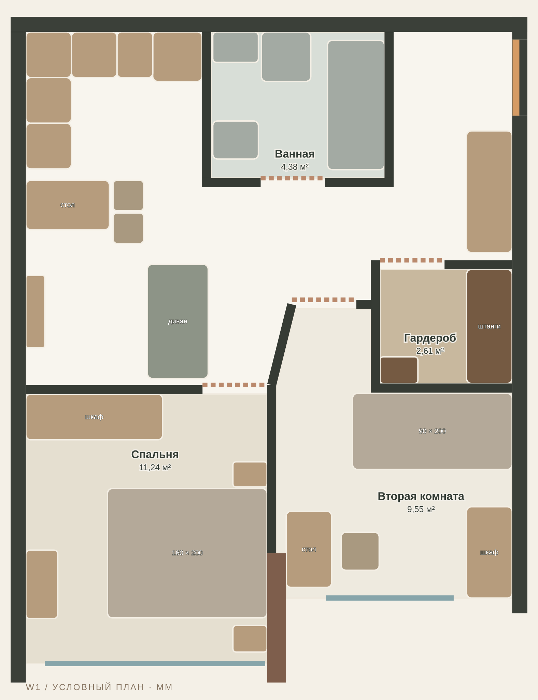
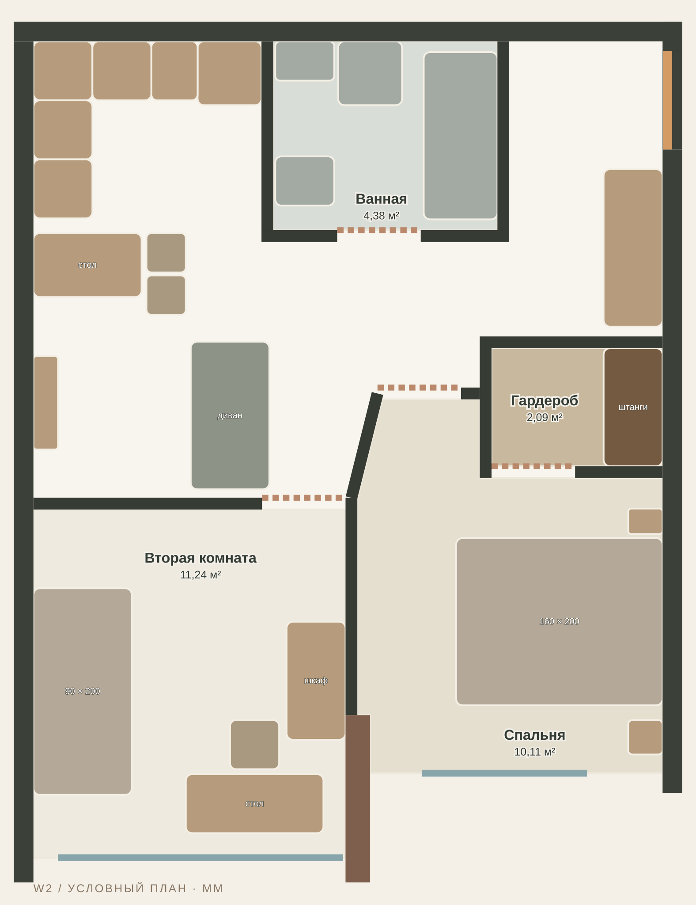
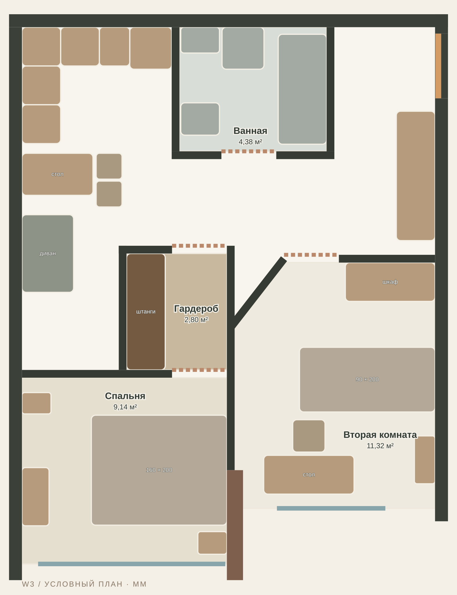
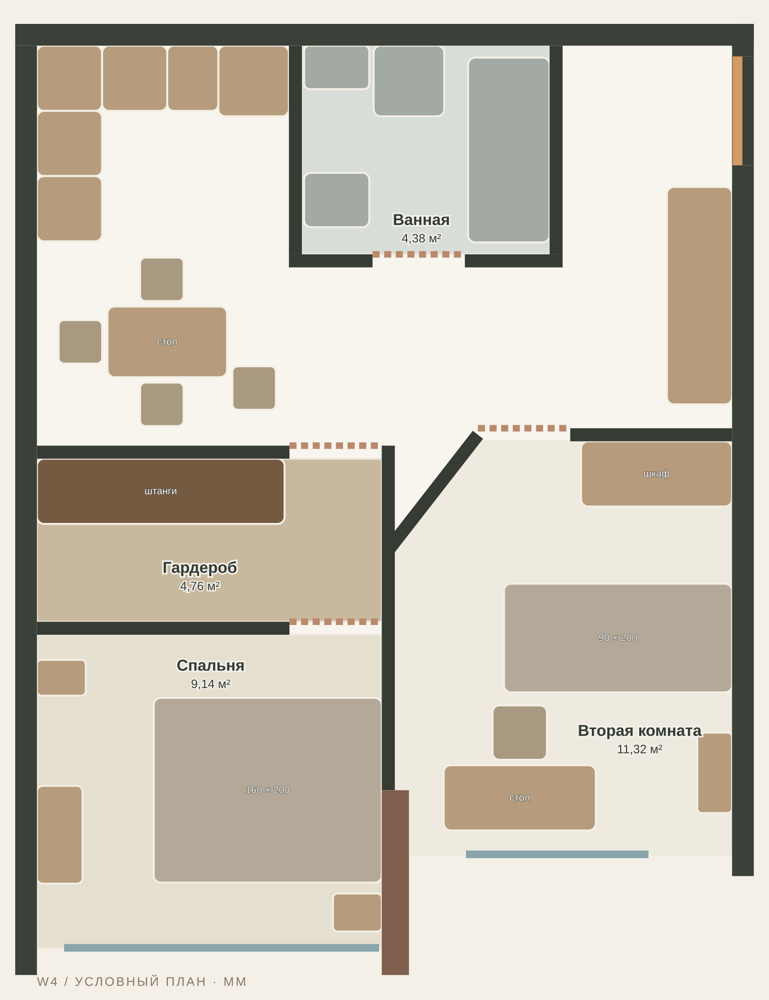
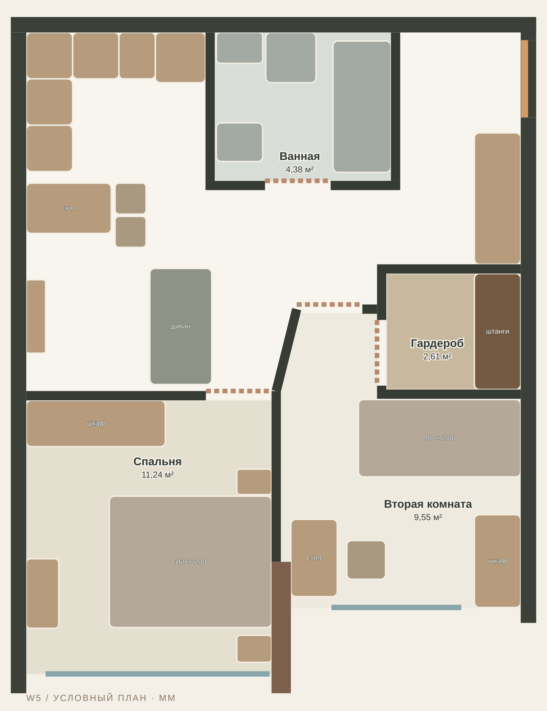

01 / W1Из холла
Общий гардероб у холла
Непроходная комната для вещей с доступом из общей зоны.

Развернуть план ↗2,61гардероб · м²
1500ряд плечиков · мм
1140проход · мм
Спальня 11,24 м²Вторая комната 9,55 м²
Что выигрываем
Сохраняет спальню, диван, кухню и санузел D.
Чем платим
Вторая комната 9,55 м²; стол 1000 мм. Локальный подход у полок — 640 мм.
Осмотреть вариант I в 3D ↗02 / W2Из взрослой спальни
Личный гардероб при спальне
Меняем спальни местами: взрослая справа, вторая комната слева. В гардеробную заходят только из спальни.

Развернуть план ↗2,09гардероб · м²
1200ряд плечиков · мм
1140проход · мм
Спальня 10,11 м²Вторая комната 11,24 м²
Что выигрываем
Вторая комната 11,24 м² и стол 1400 мм; гардеробная приватная, кухня и санузел сохранены.
Чем платим
Меньше ряд плечиков; у двуспальной кровати более компактные боковые подходы. Перенос мебели между спальнями.
03 / W3Проходная, перед спальней
Спальня через гардеробную
Компактный проходной гардероб образует приватный вход в спальню.

Развернуть план ↗2,80гардероб · м²
1800ряд плечиков · мм
955проход · мм
Спальня 9,14 м²Вторая комната 11,32 м²
Что выигрываем
Вторая комната полностью сохранена; остаётся отдельная небольшая зона с диваном.
Чем платим
Диван сокращён до 1200 мм; спальня 9,14 м². Вход в спальню всегда через гардеробную.
04 / W4Проходная, перед спальней
Большая гардеробная-галерея
Полноширинная гардеробная становится входной зоной взрослой спальни.

Развернуть план ↗4,76гардероб · м²
2280ряд плечиков · мм
900проход · мм
Спальня 9,14 м²Вторая комната 11,32 м²
Что выигрываем
4,76 м² и ряд хранения 2280 мм; вторая комната полностью сохранена.
Чем платим
Нет отдельной диванной гостиной: общая зона работает как кухня-столовая. Спальня 9,14 м².
05 / W5Из второй комнаты
Гардероб при второй комнате
Та же компактная зона хранения, но вход из второй комнаты: независимая приватная система для ребёнка или гостя.

Развернуть план ↗2,61гардероб · м²
1500ряд плечиков · мм
1140проход · мм
Спальня 11,24 м²Вторая комната 9,55 м²
Что выигрываем
Взрослая спальня 11,24 м², диван и санузел D сохранены. Шкаф прихожей удлиняется на 100 мм.
Чем платим
Гардеробная не доступна напрямую из взрослой спальни. Вторая комната 9,55 м²; семья делит хранение по комнатам.
Моя рекомендация
Сначала смотреть W1 и W3.
W1 — самый спокойный обмен площади: общий независимый вход, ваша спальня остаётся просторной. W3 — если важнее ощущение личного сьюта и полноценная вторая комната. Проход через гардеробную и диван 120 см становятся частью повседневного сценария.
W2 подходит, если вторая комната должна быть просторной. W4 даёт максимум хранения ценой диванной гостиной. W5 выбирают, когда вещи второй комнаты должны храниться отдельно от взрослых.
Перед стройкой
Сверить каждую стену.
Проверены геометрические пересечения мебели, открывание холодильника, посудомойки, духовки и стиральной машины, а также проходы тела Ø500 мм при открытых дверях. Это проверка условной модели, не рабочая документация.
Нужны обмеры, подтверждение несущей схемы, согласование проёмов и перегородок, дверь в чистом размере, воздухообмен гардеробной и проект освещения. В J, K и L особенно важно примерить реальные габариты кровати и столярки. Утверждённый D остаётся базой, пока не выбран новый план.